Tree settings
Tree settings apply to the whole tree: its name, random seed, size and growth stage, the default colours, the season, ambient occlusion and wind. They are in the Tree section at the bottom of the Properties panel. To see them without scrolling, press Esc to deselect the current generator.
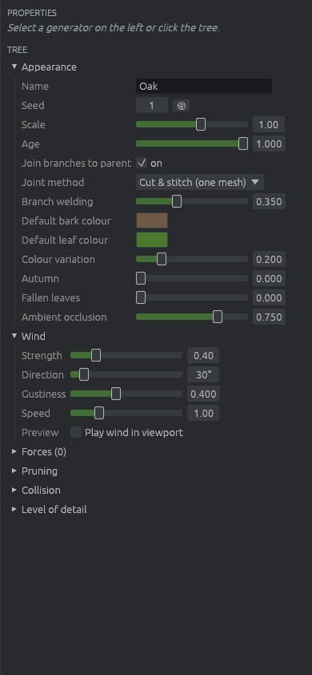
Appearance
- Name
- The tree's name. Exports use it for mesh and file names, for example
Oak_LOD0. - Seed
- The random seed. The same seed with the same settings always grows the same tree. Click the dice button, or Randomize in the toolbar, to pick a new seed: the result is another individual of the same species.
- Scale 0.1 to 5
- Scales the whole tree uniformly. Use it to fit a preset to the size you need without changing its proportions.
- Age 0.05 to 1
- The growth stage. At 1 the tree is grown as designed. Lower values grow a younger version of the same individual: shorter, thinner and with fewer branches, with the deepest branch levels appearing last. Export the tree at several ages to show it growing.
- Join branches to parent, Joint method, Branch welding
- How branches and roots meet their parent. See Branch joints.
- Default bark colour, Default leaf colour
- The colours of generators that have no material. The same two colours appear at the top of the Materials list in the left panel.
- Colour variation 0 to 1
- Random variation of the leaf colour from leaf to leaf.
- Autumn 0 to 1
- Blends the leaf colours towards autumn yellows, oranges and reds. Each leaf turns by a slightly different amount.
- Fallen leaves 0 to 1
- The share of leaves that have fallen. At 1 the tree is bare. For a given seed the same leaves always fall first, so you can step the value to make a sequence.
- Ambient occlusion 0 to 1
- Darkens the inner branches and the leaves deep inside the crown, where little light reaches. The darkening is stored in the vertex colours, so it is also visible in game engines. 0 turns it off.
Age
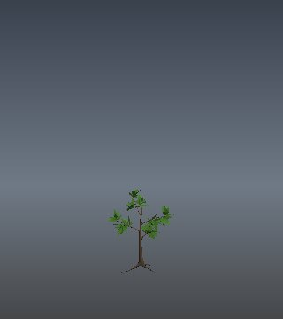
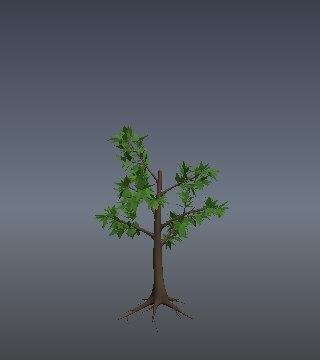
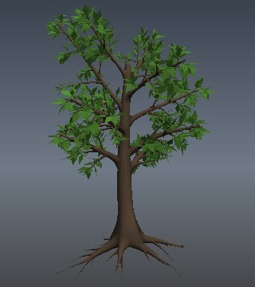
Season
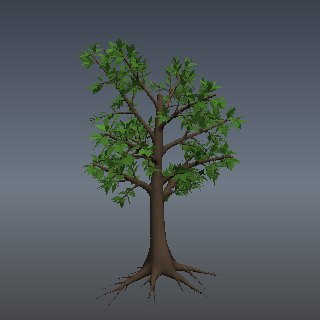
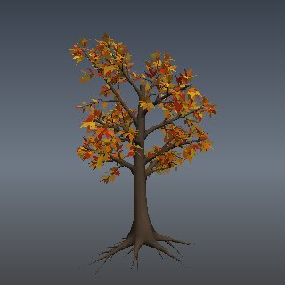
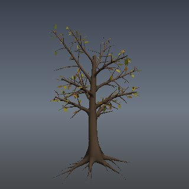
Ambient occlusion
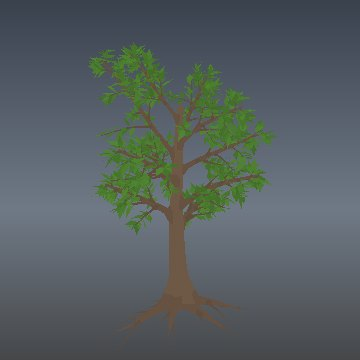
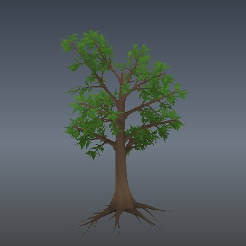
Seed
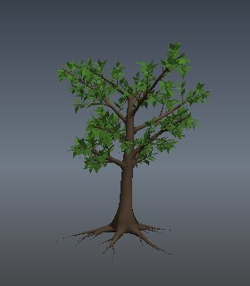
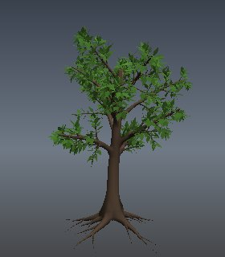
Wind
The wind settings control the wind animation in the viewport and the sway data written to exports.
- Strength 0 to 2
- How far branches and leaves move.
- Direction 0° to 360°
- The direction the wind blows towards, measured around the vertical axis.
- Gustiness 0 to 1
- How irregular the wind is. At 0 the tree sways evenly; higher values add gusts.
- Speed 0.1 to 4
- The speed of the animation.
- Preview
- Plays the wind in the viewport. The Wind button in the toolbar does the same.
The trunk sways little and the crown tips most; leaves also flutter on their own. GLB exports contain a sway weight and a flutter weight for every vertex, so a wind shader in your engine can animate the tree the same way. See Wind data.
Forces, pruning, collision and level of detail
The sections below Wind are described on their own pages: